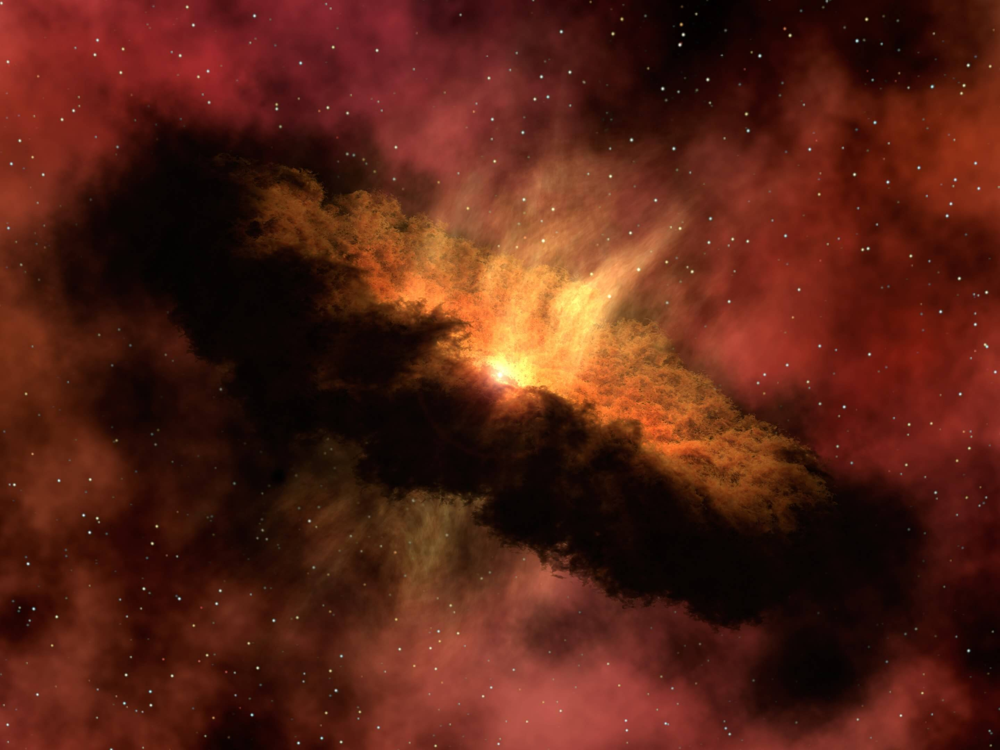
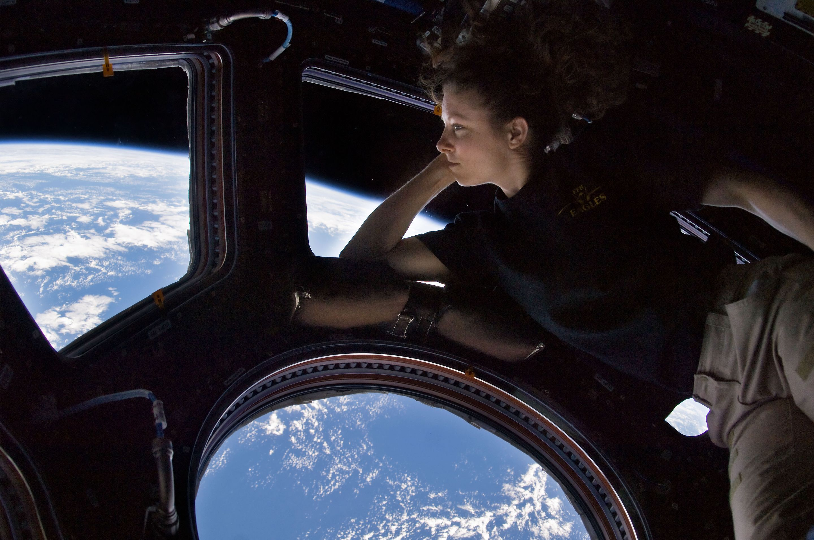

Earth is the third planet from the Sun and the only astronomical object known to harbor life. This is enabled by Earth being a water world, the only one in the Solar System sustaining liquid surface water.
Most of Earth's land is somewhat humid and covered by vegetation, while large sheets of ice at Earth's polar deserts retain more water than Earth's groundwater, lakes, rivers and atmospheric water combined. Earth's crust consists of slowly moving tectonic plates, which interact to produce mountain ranges, volcanoes, and earthquakes. Earth has a liquid outer core that generates a magnetosphere capable of deflecting most of the destructive solar winds and cosmic radiation.

Earth's life has been shaping and inhabiting many particular ecosystems on Earth and has eventually expanded globally forming an overarching biosphere. Therefore, life has impacted Earth, significantly altering Earth's atmosphere and surface over long periods of time, causing changes like the Great Oxidation Event. Earth's life has also over time greatly diversified, allowing the biosphere to have different biomes, which are inhabited by comparatively similar plants and animals. The different biomes developed at distinct elevations or water depths, planetary temperature latitudes and on land also with different humidity. Earth's species diversity and biomass reaches a peak in shallow waters and with forests, particularly in equatorial, warm and humid conditions. While freezing polar regions and high altitudes, or extremely arid areas are relatively barren of plant and animal life.
The upper atmosphere, the atmosphere above the troposphere, is usually divided into the stratosphere, mesosphere, and thermosphere.

Each layer has a different lapse rate, defining the rate of change in temperature with height. Beyond these, the exosphere thins out into the magnetosphere, where the geomagnetic fields interact with the solar wind. Within the stratosphere is the ozone layer, a component that partially shields the surface from ultraviolet light and thus is important for life on Earth. The Kármán line, defined as 100 km (62 mi) above Earth's surface, is a working definition for the boundary between the atmosphere and outer space.
Anything that leads you home is a map.
A poem. A song. A drawing.
May, 2024
[28.4744° N, 77.5040° E]
↓
Drag ↔